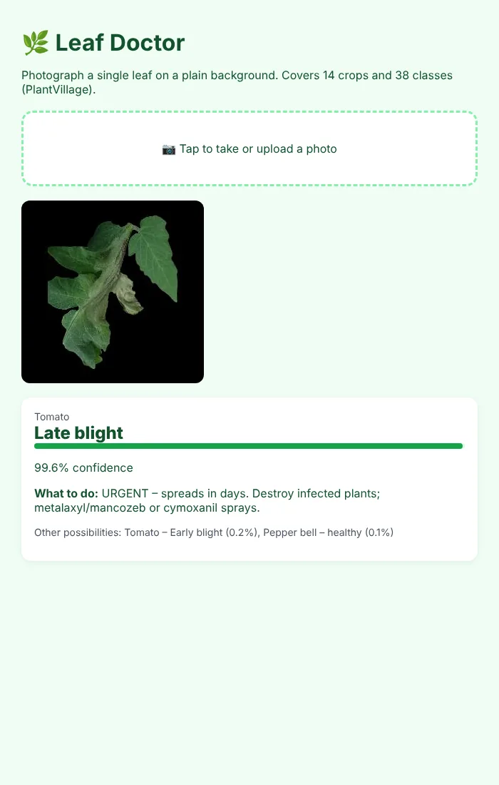
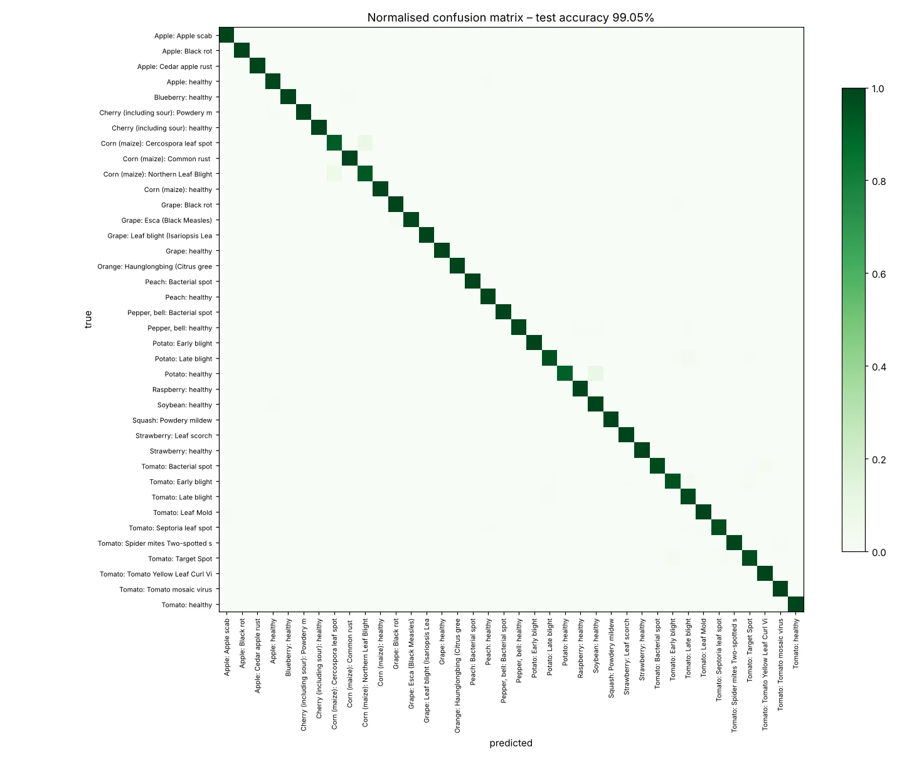

Plant Disease Detection
One leaf photo in, a diagnosis and a next step out
A from-scratch PyTorch replication of Chohan et al. (2020) that identifies 26 diseases across 14 crops. It reaches 99.05% on 8,146 unseen images (paper: 98.3%), refuses photos that aren't leaves, and tells the farmer what to do next.
From leaf to advice
pipeline + test results- 01Leaf photoupload or camera
- 02Sanity checksblank · not a leaf · unsure
- 03Resize64 px (256 px on a GPU)
- 04CNN5 conv blocks, 1.58 M params
- 05TTAaverage of 4 rotations
- 06Advicedisease + farmer guidance
Test accuracy
Hardest classes (F1, higher is better)
~/screens
See it working


[01] ~/the-problem
Why it matters
Pests and plant diseases cost an estimated 20–40% of global crop production each year (FAO). In India a smallholder often waits days for an agronomist, while late blight can wipe out a tomato field in under a week.
A phone photo with an instant diagnosis and what to do next can save the crop. The model also has to refuse photos it can't judge, instead of always naming a disease.
Before the checks, a drawing of a graph came back as 'Tomato late blight, 89%'. Now blank photos, non-leaves and unsure answers get a 'retake or ask an expert' reply.
[02] ~/how-it-works
How it works
Follow the paper's CNN, then add the checks a real farmer needs.
- 01
Split cleanly
54,305 PlantVillage images in 38 classes, stratified 70/15/15 into train, validation and test with a fixed seed.
- 02
Augment
Flips, 90° rotations and brightness/contrast jitter, so the model sees leaves in different orientations and light.
- 03
Build the CNN
Five blocks of 3×3 convolution, batch norm, ReLU and max-pooling (32 to 256 filters), then dropout and two dense layers.
- 04
Train efficiently
AdamW with a one-cycle learning rate and 0.05 label smoothing for 12 epochs on a 2-core CPU.
- 05
Predict robustly
Test-time augmentation averages four rotations; contrast, leaf-colour and confidence checks refuse what it can't judge.
- 06
Advise the farmer
Each diagnosis comes with guidance, e.g. 'Late blight: urgent, spreads in days. Destroy infected plants; metalaxyl/mancozeb sprays.'
[03] ~/results
Results
8,146 unseen test images (15% hold-out). The paper column is quoted from Chohan et al. (2020).
| MODEL | ACCURACY | TOP-3 | MACRO F1 | WEIGHTED F1 | PARAMETERS |
|---|---|---|---|---|---|
| This replication | 99.05% | 99.99% | 0.986 | 0.991 | 1.58 M |
| Chohan et al. (paper) | 98.3% | – | – | – | – |
The 99% is a lab number: PlantVillage leaves sit on plain backgrounds, and the original PlantVillage study saw accuracy fall to about 31% on photos from other sources.
HONEST LIMITS
— Field photos with cluttered backgrounds and several leaves will score far lower; the next step is fine-tuning on PlantDoc field images.
— The non-leaf thresholds were tuned on the same 100 sample images, so treat them as a sanity check, not a measured rejection rate.
WHAT I’D DO NEXT
→ Fine-tune on PlantDoc field photos
→ Export to ONNX / TFLite for offline Android
→ Advice in Hindi and Marathi
→ An 'unknown crop' class, as the paper suggests